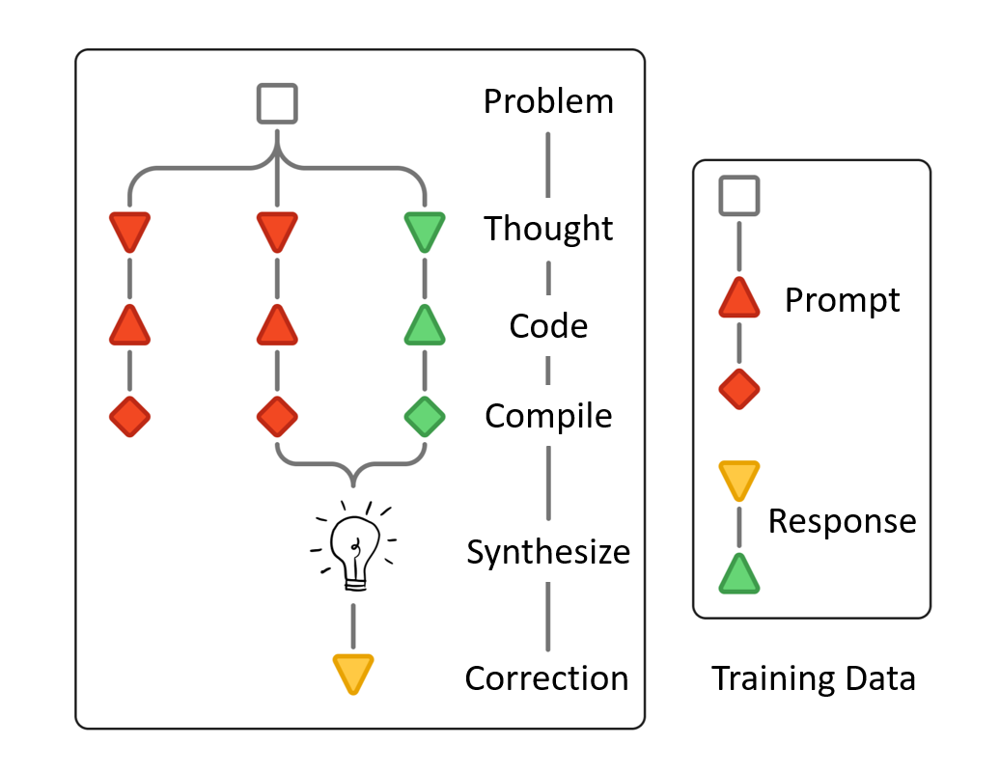
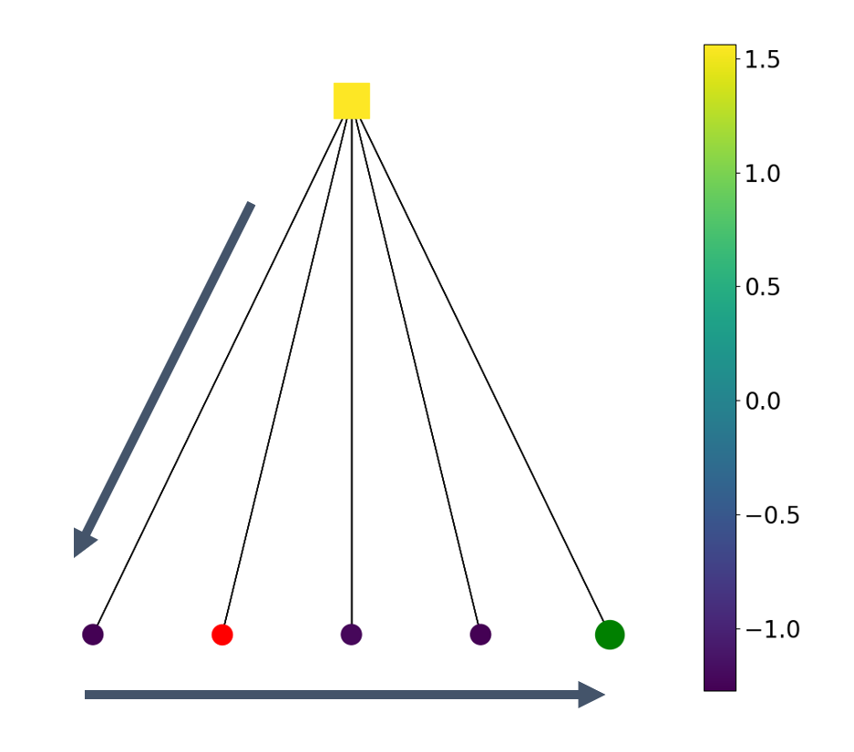

Trains LLM provers to refine failed Lean 4 proofs using Lean compiler error messages, evaluated with Lean v4.15.0 and Mathlib.
Abstract
Large language models (LLMs) have demonstrated significant potential in formal theorem proving, yet state-of-the-art performance often necessitates prohibitive test-time compute via massive roll-outs or extended context windows. In this work, we address this scalability bottleneck by exploiting an informative structure in formal verification: the observation that compilers map a vast space of diverse proof attempts to a compact set of structured failure modes. We introduce a learning-to-refine framework that leverages this compression to perform efficient learning and proof exploration. We perform tree search that corrects errors locally conditioned on explicit verifier feedback, thereby circumventing the costs associated with accumulating a long history of proof attempts. Extensive evaluations show that our method consistently amplifies the reasoning capabilities of base provers across varying scales. Notably, our approach achieves state-of-the-art performance on PutnamBench among publicly reported $\sim$8B and $\sim$32B parameter models under comparable test-time budgets, offering a scalable paradigm for next-generation verifier-guided reasoning.
Problem
State-of-the-art LLM provers for Lean need very large test-time compute, either through massive roll-outs or long multi-round self-correction contexts. Existing methods reduce compiler feedback to binary success signals or treat it as plain text.
Approach
The authors observe that the Lean compiler maps many distinct failed proofs to a small set of recurring error messages, acting as a compressor. They synthesize refinement training data from pairs of failed and correct proofs, with Claude writing the analysis of each error, and fine-tune Kimina-Prover-Distill-8B and Goedel-Prover-V2-32B via expert iteration. Each refinement step is Markovian: it conditions only on the current proof and its compiler messages. At test time, random or value-guided tree search runs over these refinement steps.

Figure 2 : Refinement training data synthesis pipeline. Experiments were conducted using Kimina Lean server ( Santos et al., 2025 ) , with Lean v4.15.0 and a pinned snapshot of Mathlib.
Results
The method improves the base provers on MiniF2F, ProofNet, MOBench and PutnamBench. The value-guided Goedel-Expert model solves 110 PutnamBench problems with a budget of 256, which the authors report as state of the art among publicly reported 8B and 32B models at comparable budgets.

(b) Value-guided tree search strategy.
Method
MiniF2F-test
ProofNet
Putnam
Putnam 256
Kimina
77.46
14.56
10
10
Kimina Value
81.97
15.36
20
25
Goedel-V2
84.43
15.63
32
41
Goedel Value
86.89
24.26
63
110
Accuracy (%) with sampling budget 64; Putnam column is number of solved problems; Putnam 256 uses budget 256